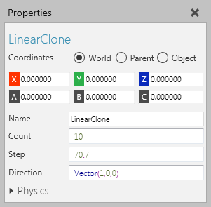
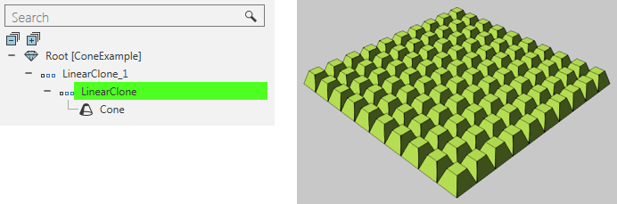

A Linear Clone feature clones its child features along an axis.

In some cases, Linear Clone operations are chained together to clone objects along two or more axes.

| Name | Description |
| Name | Defines the name of the feature. |
| Count | Defines the number of times to clone child features.
0 hides the original child features. 1 shows the original child features. n+1 shows the original child features and n amount of clones. |
| Step | Defines the distance between each clone. |
| Direction | Defines the direction for cloning child features. |
| Physics | Defines a set of physics properties for the feature. |